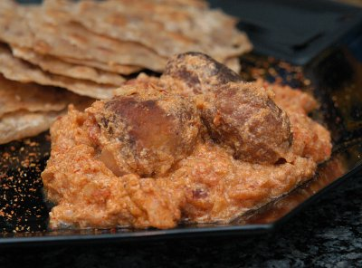

| Zutaten für 4 Personen: | |
| 250 g | Hüttenkäse |
| 3 EL | Vollkornmehl |
| 1/2 KL | Backpulver |
| 2 | grüne Chilis |
| 1 KL | Korianderpulver |
| 1/2 KL | Salz |
| 1/4 KL | Chilipulver |
| 5 dl | Erdnussöl |
| 1-2 KL | Ingwer, frisch gerieben |
| 1 kleine | Knoblauchzehe, gepresst |
| 1 | Zwiebel, fein geschnitten |
| 2 EL | Ghee |
| 400 g | Tomaten (oder Pelati aus der Dose) |
| 1/2 KL | Chilipulver |
| 1 KL | Salz |
| 1 KL | Kreuzkümmelpulver |
| 1/2 KL | Masalapulver |
| 2 EL | Kokosnusspulver |
| 250 g | Nature Joghurt |
| 1 dl | Vollrahm |
Mehl in die Teigrührschüssel geben. Backpulver, grüne Chilis, Korianderpulver, Salz, Chilipulver dazugeben. Nach und nach Hüttenkäse beigeben und zu einem dicken Teig kneten.
Den Teig zu baumnussgrossen Kugeln formen.
Erdnussöl zum Frittieren in eine Bratpfanne geben, die Kugeln goldbraun frittieren, auf Haushaltpapier abtropfen lassen.
Currysauce:
Ghee in einer Bratpfanne erhitzen, Ingwer, Knoblauch und Zwiebel darin anbraten.
Tomaten häuten, würfeln (oder Pelati) zugeben.
Alle Gewürze (Chilipulver, Salz, Kreuzkümmelpulver, Masalapulver, Kokosnusspulver) dazugeben, auf mittlerer Stufe 15 Minuten köcheln lassen.
Nature Joghurt beigeben, mischen 1 Minute köcheln.
Die frittierten Koftas zugeben, sorgfältig darunter mischen.
Vollrahm zugeben und sofort servieren!
Patricia Krummenacher, Indischer Kochkurs, 2006
Das erste mal ist das total abverreckt. Mein Stabmixer hat das Mehl mit dem Hüttenkäse nicht schön vermischt und dadurch gab das sehr flüssige Koftas die gleich flach zerronnen sind. Geschmeckt haben sie tadellos und das Curry war an sich sehr gut. Man sollte allerdings nicht vergessen eine Beilage zu reichen wie zum Beispiel Brot, Popadoms oder Reis. RE 5.5.2008
Habe das am 6.6.2011 erneut zubereitet. Diesmal mit mehr Erfolg und das Rezept umgestellt, dass es eher einen Teig für die Koftas gibt. Die wären dann eher Brotig mit dem Mehl. Immer noch ausgezeichnet. RE
@LINKBACK_TAG@ @WAKELOCK@